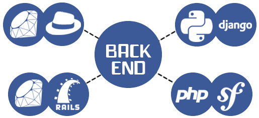
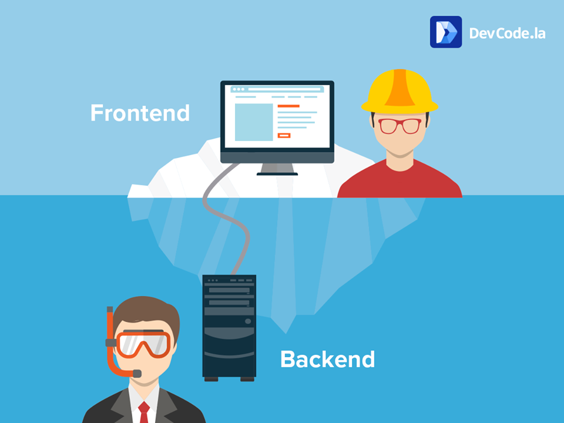
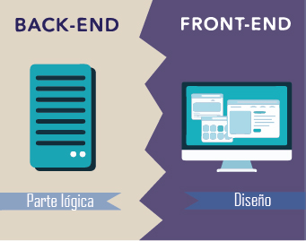

Front-End
El frontend son todas aquellas tecnologías que corren del lado del cliente, es decir, todas aquellas tecnologías que corren del lado del navegador web, generalizandose mas que nada en tres lenguajes, Html , CSS Y JavaScript, la persona encargada del frontend, se dedica solo a estas tres tecnologías, aunque esto no significa que no sepa como trabaja el Backend, ya que es necesario para que pueda consumir datos y pueda estructurar correctamente un maquetado en HTML y CSS para su mejor comodidad y la comodidad del Backend a la hora de colocarlo sobre un servidor, normalmente en FrontEnd se encarga de estilizar la página de tal manera que la página pueda quedar comoda para la persona que la ve, es decir, esta persona, debe de conocer tecnicas de User Experience para dar una experiencia de usuario comoda a la persona que visita la página, así mismo debe de saber de diseño de Interacción para que sepa colocar las cosas de tal manera que el usuario las pueda ubicar de manera rápida y comoda.

Back-End
El programador backend es aquel que se encuentra del lado del servidor, es decir, esta persona se encarga de lenguajes como PHP, Python, .Net, Java, etc, es aquel que se encarga de interactuar con bases de datos, verificar manejos de sesiones de usuarios, montar la página en un servidor, y desde este “servir” todas las vistas que el FrontEnd crea, es decir, uno como backend se encarga mas que nada de la manipulación de los datos, que en muchas ocasiones suele ser lo más tedioso, pero al mismo tiempo, un Backend no sirve de mucho si no existe un FrontEnd de por medio que se haya encargado de que la página se vea estetica, el programador de Backend normalmente debe de conocer Bases de datos, Frameworks y Librerias que le permitan desenvolverse mejor en la manera en la que sirve las páginas
En la programacion web no podemos darle mas importancia a algun tipo de programacion ya que ambas partes deben trabajar de una forma conjunta para poder funcionar de manera correcta, hay personas que se especializan en algun tipo en especifico, sin embargo en el campo laboral es mejor remunerado cuando los programadores conocen de ambos tipos, en lo personal me ha gustado bastante el tipo Frontend que es el que hemos visto.
  Ir arriba